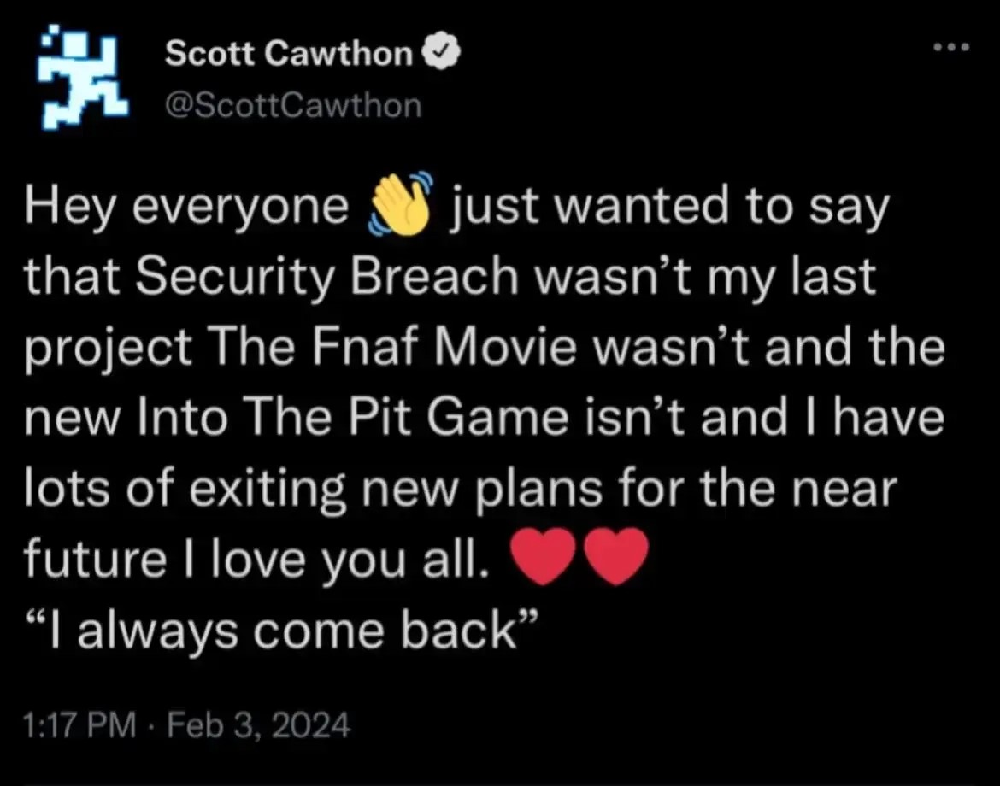
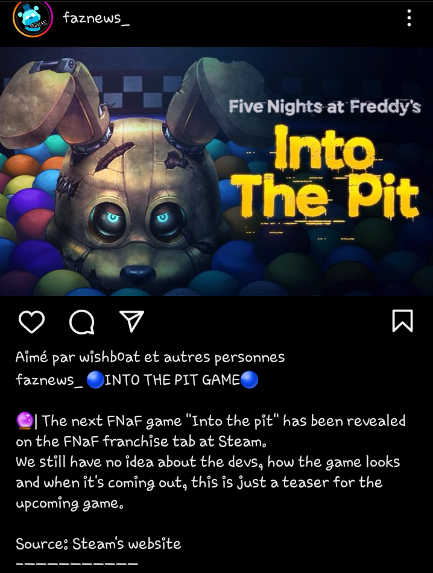

J'aimerais remercier Scott Cawthon pour avoir créé ces jeux, est d'avoir créé une super enfance avec sa série de jeux vidéo, avec c'est livre et même avec son film
Attendez, on me dit à l'oreillette que Scott ne part pas en retraite, mais qu'il va continuer de faire des jeux et des films

On me dit aussi qu'il a annoncer un nouveau jeux qui s'appelle FNAF : Into the Pit

Je vien d'apprendre aussi qu'on le voit dans la derniere vidéo de Game Theory du Youtubeur MatPat
Merci, un énorme merci à Scott, est comme il dit, I ALWAYS COME BACK !